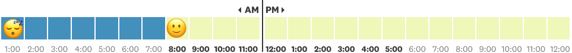

Story + Code by Ilia Blinderman
Design by Jan Diehm
Whoa, dark in here! Better turn the light on.
Scroll down to turn the light on
That’s better.
We often forget how much artificial light influences our lives.
Before modern lighting, we used to go to sleep when night arrived, waking briefly for an hour or two in deep into the night before retiring again until the morning.
Today, darkness poses no constraint: one can finish work in the evening, cook dinner, and still have hours more to read, or study, or watch television.
But light was not always so easy to procure. It is, in fact, astounding how little effort an hour’s worth of light costs us.
Let’s try working for your light.
Each pixel you scroll through is the equivalent to a second of work for an average waged worker in America. Let’s see how long it takes you to afford an hour’s worth of light in 2020.
begin
Easy, there! If the few pixels you just scrolled through were equal to the wages you’d earn for a second of your time, you’d already have over 10 hours of sweet illumination.
Feels effortless, doesn’t it? Let’s rewind to the 1800s, where light is more expensive. How long do you need to scroll in order to be able to afford an hour of light now?
begin
Ahh, the 1800s. What a time to be alive!
A Western city-slicker like yourself could’ve had any number of thoroughly fulfilling careers to be able to afford some candlelight.
Maybe you were lucky enough to enter the workforce as a child, and used your tiny hands to help operate the dangerous machinery in the textile factories.
Just imagine it — you could’ve been the 12-year-old that helped provide London’s well-heeled with such iconic pieces as the gentleman’s full-body wide-striped romper.

If you’re the sort of entrepreneur that’s passionate about the “social” aspect of social media, and enjoys the rough and tumble of aggressive tweeting, I bet you’d have loved being a newspaper crier.
Look at him, a seasoned veteran of the media landscape, ready to deliver a withering hot take at a moment’s notice.

I’d follow this man into the culture wars any day. Ready and willing to retweet at your command, sir!
If the hustle and bustle of the city wasn’t your style, you may have opted for a more meditative profession.
I’d recommend joining the ranks of the garden hermits.

A stipend; free room and board; and all the time in the world to live in someone’s garden and contemplate your spirituality? That’s a great job. The fact that your employer explicitly requested you grow your nails “as long as nature will permit?” Priceless.
Anyway, all this work as a quirky 19th century hermit/early social media manager/Dickensian laborer must be tiring, but don’t worry, you’re almost there.
Did we enter a Victorian-era class for gifted children? Because it just got real bright in here. And it only took 6 hours!
But to really feel how tremendously expensive light was, let’s go back to the Babylonian era, in 2000BC.
begin
Ancient Babylon.
Ancient. Friggin. Babylon.
This is not the Babylon you know and love. No sir, no ma'am, no way.
I know what you’re thinking, but this isn’t the Babylon your grandma told you about, pal. That one may have been old, but this Babylon is positively primordial.
If you thought you were getting too good a deal in the Victorian era by working a full day for an hour’s worth of light, you’re going to LOVE IT here in central-south Mesopotamia.
(that’s present-day Iraq and Syria)
Now, before we get started, I’m going to level with you: I’m not really an expert on Mesopotamia.
Having said that, I checked out a few built-for-middle-school-history-class sites and it looks like you’ve got a couple of options for employment.
If you’re in reasonable shape, you might’ve chosen to be a laborer.
Are you Celtics center John Mahnken? Because you’re world class when it comes to putting up bricks.
Hmmm, what else have I got for you?
Looks like you might also try your hand at mathematics. Apparently, the Babylonians came across the Pythagorean Theorem even before Pythagoras, and didn’t feel the need to make quite as big a deal of it, to boot. There’s something to say for this sort of imperial humility.
Entertainers were somewhat sought-after, too. Just imagine yourself, in your loin-girded splendor, stroking your 3-string gish-gu-di, the crowd whipped into a primeval frenzy at the prospect of your gishy riffs.
You could be this man.
Anyway, I’ve done my best to keep you entertained, but let’s face it, Babylonian light is expensive. Time to put in the yards.
That is to say, let’s get after it.
Get your money.
When the dentist says, “you need to stop grinding,” you tell her “Respectfully, I’m never off my grind.”
Honestly, I’ve hit overdraft on my motivational quotes, so that’s it from me. Best of luck friendo.
Look, I'm going to level with you. It's going to take you a long time to scroll. I'm sure you're very clever, and can devise a way to overcome this challenge, but if you'd like a 21st century shortcut, click the button below. Don't forget to keep your eye on the timer.
Scroller, take the wheel
Nice work! Just over 2 and a third days of non-stop labor; that's about a week and a half of salaried, 8-hour-a-day employment. You can rest easy knowing that while you've read this story, you've earned hundreds of hours of artificial illumination. I hereby induct you into the International Association of Time Savers.
Method: This project is a visualization of William Nordhaus’ 1990s paper, “Do Real-Output and Real-Wage Measures Capture Reality? The History of Lighting Suggests Not”, wherein the economist assessed the amount of illumination that workers could purchase at various times in history. I’d recommend the paper even if you’re not a fan of academic economics writing; it’s approachable, and Nordhaus is the type of Nobel prize-winning overachiever who goes so far as recreating a Babylonian oil lantern to assess its illumination capacity.